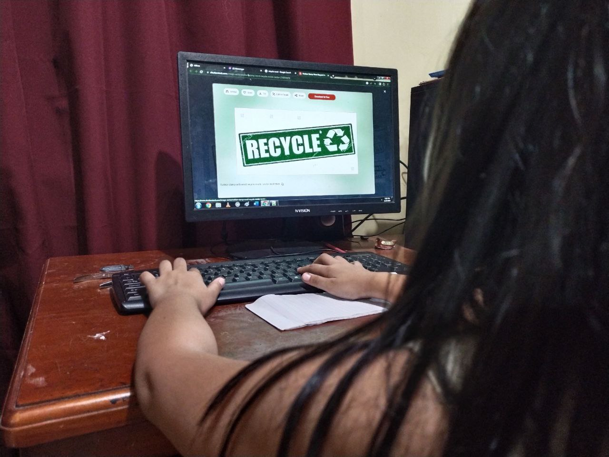
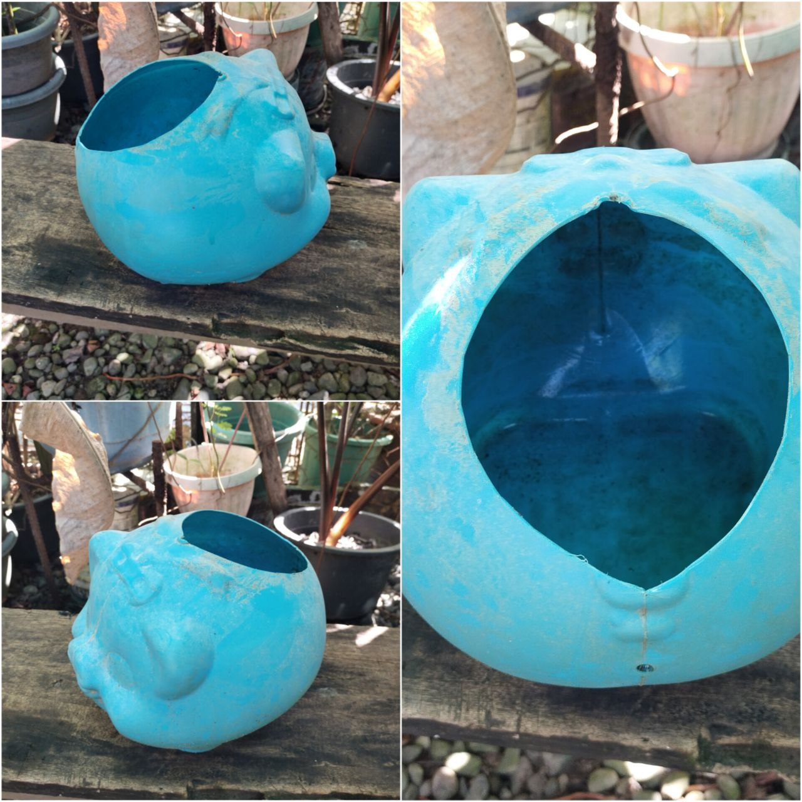
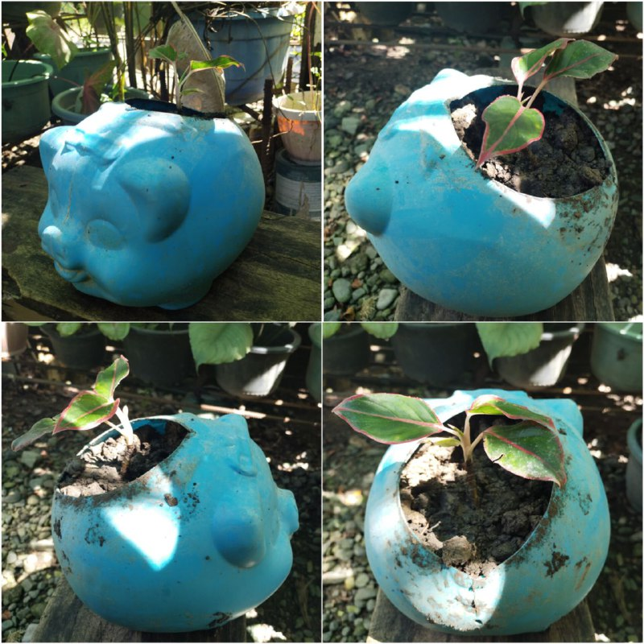

"LIVE, LAUGH, RECYCLE"
Hola!
I have always loved the nature. It never fails to amaze me with its enthralling beauty and gorgeous landscapes. It is quite unfortunate that I also came to see the slowly destruction of the nature I loved. The rate of destruction far surpasses the rate of regeneration. The once beauty, full of greens were now filled with gray smokes due to human actions. I am called Althea Mae A. Hernandez and as a fellow human, I am also held accountable to the changes of the environment. Which is why I am sitting in front of the screen, encouraging everyone to help me save our environment and slowly bring back its beauty.
But.... How?
Let us apply self-discipline. After that, we must then proceed to teach others to be aware too. Let's Educate them! There are many ways that we can do to educate our fellows. Like me, I am using the technology and making a webpage about my advocacy which seeks to save our environment. Through this mean, I can show it to a large audience and it will make my advocacy spread more and encourage the people.
For example, I am using technology to introduce the concept of recycling to my younger sibling. In the picture at the right, I am showing her the word recycle and teaching her it's importance as someone who consumes goods and produces waste everyday.

Sometimes, small actions are underestimated.
Do you know that simply learning how to recycle some of your waste can help save our planet? It helps reduce the non-biodegradable wastes, such as plastic bottles, that takes time to decompose.
According to the internet, Recycling helps reduce greenhouse gas emissions by reducing energy consumption. Using recycled materials to make new products reduces the need for virgin materials. This avoids greenhouse gas emissions that would result from extracting or mining virgin materials.
 Here is an example of recycling. My little sister had an alkansya and she now have no use for it. Instead of throwing it away and letting it pollute the environment, I used it as a plant pot through the use of recycling.
What Are You Waiting For? Join Us on Our Save the Environment Movement!
© 2023 BY Group V | ALL RIGHTS RESERVED